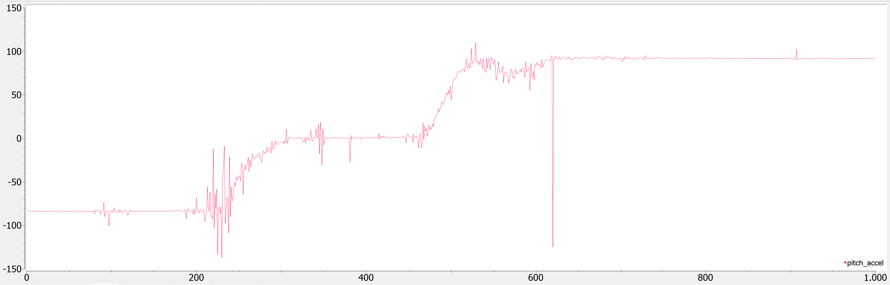
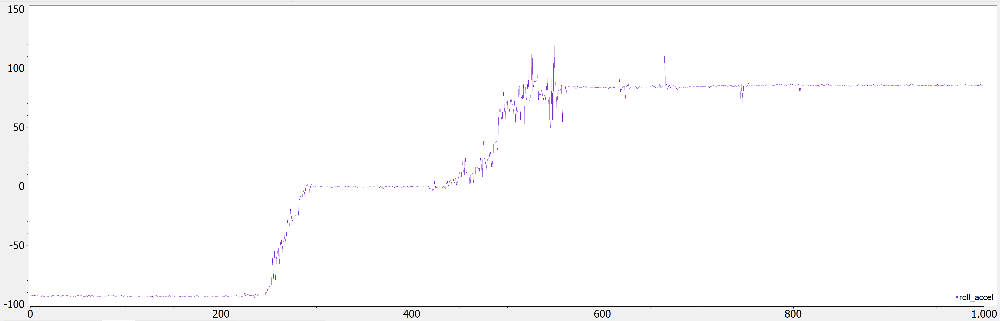
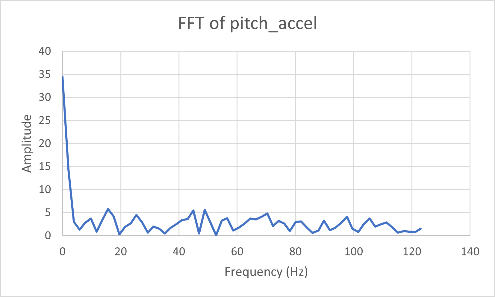
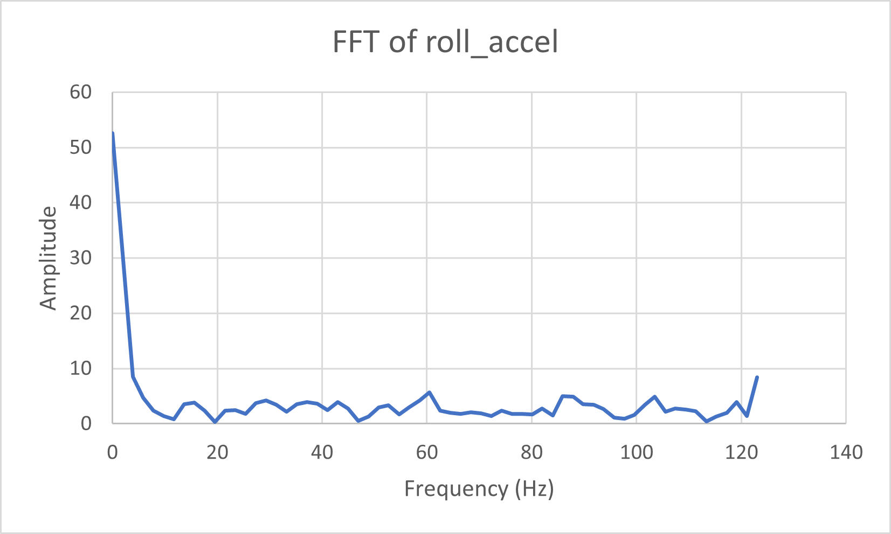
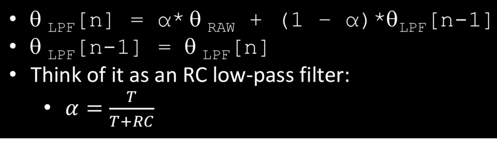
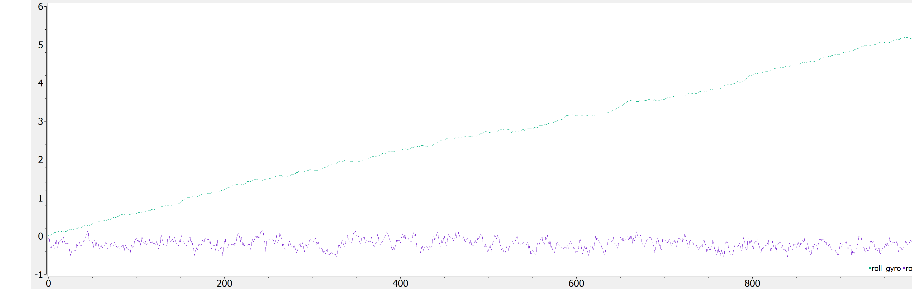
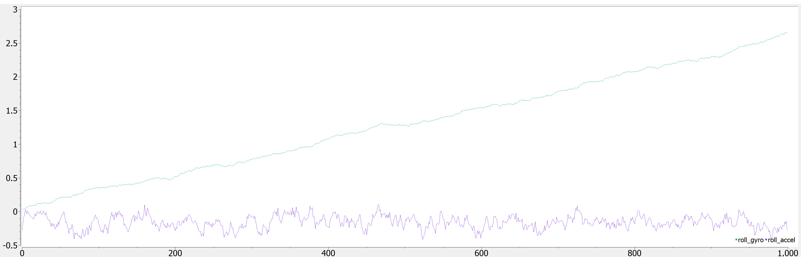

Objective
In lab 4, I learned how to get pitch, roll, and yaw from the IMU (Inertial Measurement Unit) sensors and transmitted the data over bluetooth from the Artemis. I also used batteries to power the Artemis so it could collect data while the car was running. This will eventually be used to collect orientation data for the robot later.
Set Up the IMU

I started off by running the IMU example code to ensure that the sensor worked. The following video demonstrates the sensor behavior as I rotate, flip, and accelerate the board.
In the beginning, I simply rotate the sensor slowly, causing changes in the gyroscope data. Keeping the orientation the same and moving the sensor back and forth along various planes would cause the accelerometer to oscillate, as seen in the video. Most of the values started at 0, but accelerometer data for Z was larger than 0 due to the force of gravity.
In the code, the AD0_VAL is set to 1 as the default. This value sets the I2C address as binary 1101001, or hexadecimal 0x69. To use a second IMU, one would simply just need to modify the code for the second IMU to change the I2C address to a different one.
Accelerometer
The accelerometer data could be used to calculate pitch and roll. The following equations were used:
Pitch:
Roll:
There is no way to get yaw from accelerometer data, so that was not calculated in this part.
The following image demonstrates the pitch calculated from the first equation as I rotated the IMU from -90, 0, to 90 degrees around the x-axis.
The following image demonstrates the roll calculated from the first equation as I rotated the IMU from -90, 0, to 90 degrees around the y-axis.
As one can see from the data that was acquired, the pitch and roll being calculated were fairly accurate for these angles, so no calibration was necessary.
Accelerometer Noise
To determine how noise affected the IMU, I ran the car above the IMU as it collected accelerometer data. I did this for both pitch and roll calculations and ran an FFT using the example code from Arduino's FFT library.
 While the sensor was fairly good at filtering out this noise, I decided that the amplitude of the higher frequencies was large enough (amplitude was at least 12.5% of the actual signal noise) that I needed a low pass filter. This was a simple weighted average as seen from the lecture below:
where the RC was taken from the cutoff frequency equation. In this case, the cutoff frequency was 20 Hz, meaning the alpha used in the filter was approximately 0.136.
Here are the code snippets that were used to calculate the pitch with the low pass filter incorporated.
Gyroscope
The gyroscope data could also be used to calculate pitch and roll, as well as yaw. The following equations were used:
Pitch:
Roll:
Yaw:
The following code was responsible to calculate all three of these measurements.
Complementary Filter
The gyroscope roll data had a bit of drift associated with it. This was dependent on the dt, as shown below.
Drift from sampling at 100Hz:
Drift from sampling at 200Hz:
As one can see, the drift was nearly halved at the higher sampling frequency. Thus, I chose to use 200Hz as my sampling rate for this. Additionally, because we had pitch and roll data from both the accelerometer and gyroscope data, I used a complementary filter to incorporate data from both. The code for this is seen below:
Note that the alpha that was chosen for this section was 0.9, as I wanted to prioritize accuracy over noise of the sensor. Due to this, there was no drift and the data was still relatively clean.
This following video demonstrates the complementary filter and shows that the drift from the gyroscope has largely disappeared.
Sample Data
After removing delays and Serial.print statements, I was able to sample new values at a speed of TODO
I then combined the code from before with the ble_arduino code to send timestamped pitch, roll, and yaw data, along with ToF data, back to the laptop over bluetooth. The code is seen below, along with the data:

To do this, I stored the values in separate arrays locally on the Artemis before sending the data over bluetooth as one message labeled by data type ("T:" for time, "P:" for pitch, etc) separated by the "|" character. This is to more efficiently be able to collect data, as each of the sensors will have data available at different times. Thus, the arrays were split into tof1, tof2, and imu data.
Cut the Coord
At this point, the Artemis was powered off of the battery. I had two batteries from lab, a 3.7V 850mAh battery and a 3.7V 650mAh battery. We used the 650mAh battery to power the artemis, and the 850mAh battery to drive the motors. This is because the motors require more power, and the power and ground need to be separated to avoid noise from the motors interfering with the signals.
After cutting the battery leads, I connected the cables from the 650mAh battery to the JST connector as shown in the image below.